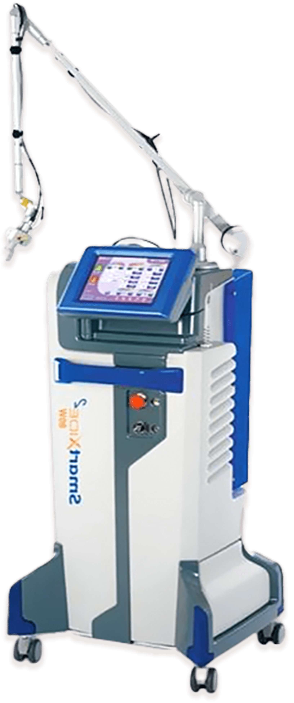
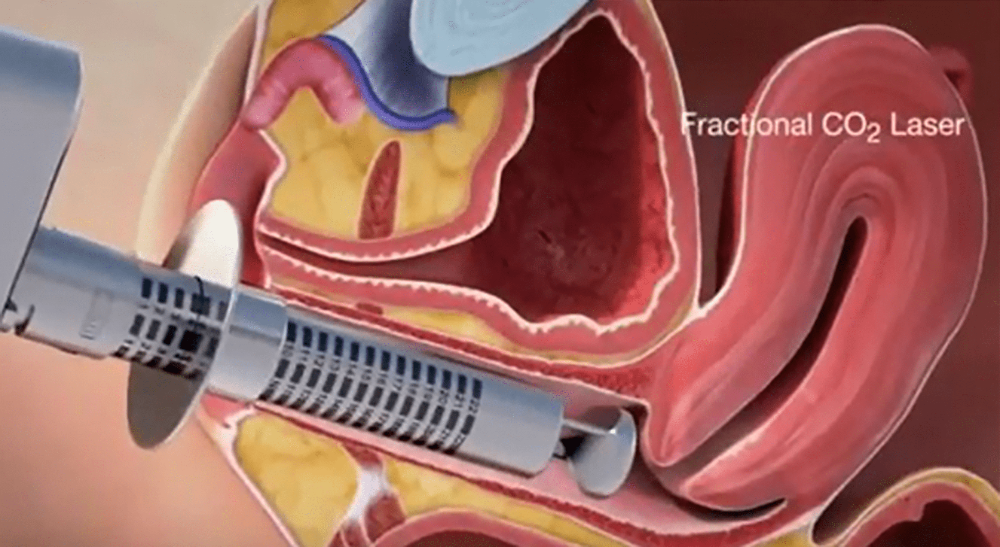
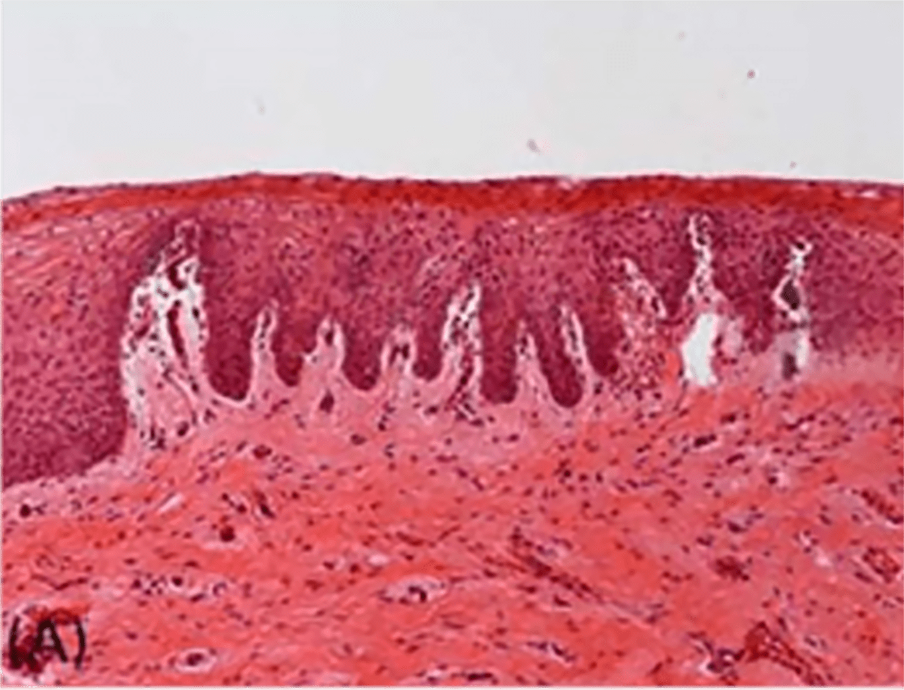
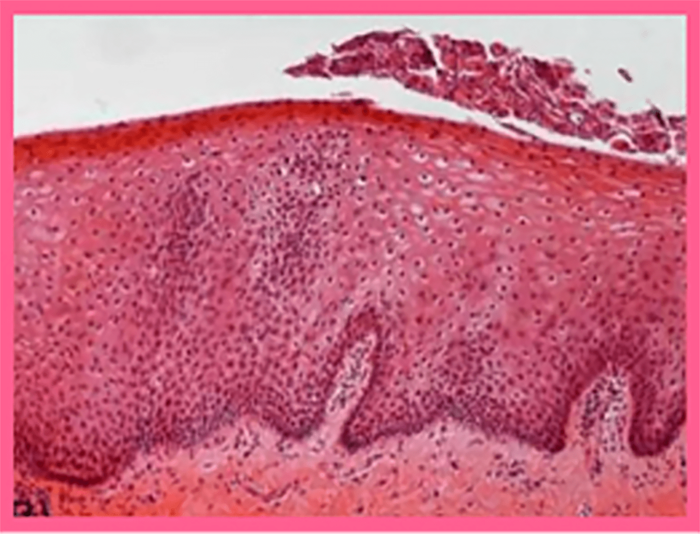

나를 위한
모나리자 터치 질 타이트닝
나를위한 산부인과의
“모나리자 터치 질 타이트닝”
은
의료진의 노하우와 기술력으로
CO2 FRACTIONAL 레이저를
질 내부에 회전시켜 질점막의 재생을 유도함과 동시에,
요실금, 질염 등의 증상을
개선하는 회복 시술입니다
- 시술시간 10분 내외
- 회복기간 없음
- 입원여부 없음
-
마취방법
없음
(수면마취 가능)
모나리자 터치란?

비 수술적 방식으로 질 성형과 요실금 개선을 한 번에
해결해 주는 신개념 레이저입니다. 질 점막의 회춘을 위한
DEKA 사만의 특수한 펄스(D-PULSE)를 이용해 기저층을
자극하여
이완된 질 점막을 탄력 있고 두껍게 좁혀주고
요실금 치료 및 질 내 환경을 개선
해 줍니다.
- 요실금
- 건조증
- 화이트닝
- 타이트닝
한번의 시크릿 터치로
타이트닝과 화이트닝을
동시에
보이지 않는 곳도 탄력있고 환하게!
질 프락셀 장비로
글라이코겐 생성과 콜라겐 생성 및 활성화를
통하여 적은 통증으로
질 내부 점막의 타이트닝 효과와 요실금,
화이트닝 등에 도움을 줍니다.
비 수술 방식으로 진행되기 때문에
시술 부담이 적고 시술 기간이 짧습니다.
모나리자 터치 시술 방법
-
01 CO2 FRACTIONAL
레이저로
질 점막 자극
-
02 콜라겐 생성으로
질 점막 촉촉, 탄력
콜라겐을 포함한 여러 가지 물질들이 재합성 하도록
유도하는 원리입니다.
질 점막이 촉촉해지고 탄력이 생겨 질 성형과
요실금 치료가 가능해진 신개념 레이저 기술입니다.
이전의
질벽 점막을 제거하고 봉합하는 수술과 달리 마취가 필요 없을
정도로
통증이 거의 없는 간단한 레이저 시술이며,
시술 후 바로 일상생활 복귀가 가능합니다.
모나리자 터치 시술 전 후

-
시술 전 점 질막-얇은 상피층과 돌기를 볼 수 있습니다.

이형태 학적 사진에 의하면 현재 조기 위축증 단계이며,
점점 세포층과 돌기가 적어지는 상피 상태로 진행 중입니다. -
모나리자 터치 시술 후 한 달 후 질 점막-더 두꺼워진

상피층, 글리코겐이 풍부한 반경이 큰 상피세포와
함께 자유 표면으로부터의 수많은 큰 세포가 떨어져
나갑니다. 신진대사의 영양공급이 재생되고 상피층
전체가 역동적으로 보입니다.
모나리자 터치,
기존 요실금 수술의
차이점
- 모나리자 터치
-
늘어진 질 벽에
레이저를 조사하여
콜라겐을 재생시키는
시술 - 없음
- 거의 없음
-
질이나 외음부
모양이 예뻐짐 -
요실금 개선 및
성감 향상
질과 골반 근육에
탄력이 생김
- 시술 시간
- 마취 여부
- 통증 여부
- 모양
- 시술 효과
- 기존 요실금 수술
-
테이프를 요도
밑에 삽입하는 수술 - 수면마취, 국소마취
-
수술 직후 배뇨 곤란,
욱신대는 통증 - 변화 없음
- 요실금 개선
모나리자 터치의 효과
-
질 위축증
개선 - 질 성형
-
질 건조증
개선 -
글라이코겐
및 콜라겐
생성 -
요실금
개선 - 성감 향상
- 질 타이트닝
-
외음부
화이트닝
모나리자 터치의 장점
-
SAFETY
뛰어난 안정성
(유럽 CE, KFDA 정식 허가) - PAINLESS 무마취, 무통증
-
FASTNESS
10~15분 시술 완료
시술 후 바로 일상생활 가능 -
EFFECTIVENESS
1회 시술 만으로
확실한 효과
모나리자 터치 대상자
-
만족스러운 성감을 위해
질과 수축력 증가를 원하는 분 -
잦은 성 관계, 출산 또는 나이에
의해 탄력 저하가 오신 분 -
질이 건조하여 관계 시 통증이 있는 분
-
외음부 미백이 필요한 분
-
폐경기 전 후의 질 회춘을 원하는 분
-
질염 및 질 위축증이 있는 분
-
콘딜로마 등 그 외
부인과 질환으로 고통받는 분
모나리자 터치는 왜
나를위한 산부인과?
-
풍부한 시술 경험,
가장 최적화된
방법으로
시술 진행 -
숙력된 기술과
노하우로
부작용 없이
안전하게 -
꼼꼼한 사후 관리를
통해 오래가는
시술 효과 -
마음까지 헤아리는
세심한 진료
질 이완 진단기
를 통한
질압측정

나를위한 산부인과에서는 비비브 질타이트닝,
질 축소술, 질 필러 시술 등에 질압측정을 통한
비교 데이터를 제공해 드리고 있습니다.

프라이빗한 휴식 과 회복
나를위한산부인과에서는 치료를 받는
환자분들이
긴장을 완화하고 편안한
마음으로 쉬실 수 있도록
고급스럽고
편안한 분위기의 1인 회복실을 제공합니다.
모나리자 터치
시술 후 주의사항
시술 후 주의 사항은 개인 차가 있을 수 있습니다.
-
01
시술 후 질 입구가 따끔거리는 증상은 자연스러운 증상이며,
1~2일 후 점차 사라집니다. -
02
시술 후 바로 일상생활이 가능합니다.
-
03
시술 당일부터 5~7일간 소량의 출혈을 동반한 물 같은 분비물이
발생할 수 있습니다. 또한 질염 균이 있던 경우,
염증 균들이 질 내
분비물과 섞여 1주일 정도 배출되므로 냄새가 날 수 있습니다.
이러한 경우 항생제 치료가
필요할 수 있으며, 1주일 후 경과를
확인하셔야 합니다. -
04
시술 당일 샤워, 탕 목욕 및 사우나는 바로 가능합니다.
-
05
시술 후 성관계, 격렬한 운동, 사우나, 탕 목욕은 1주일 정도
피해주세요.